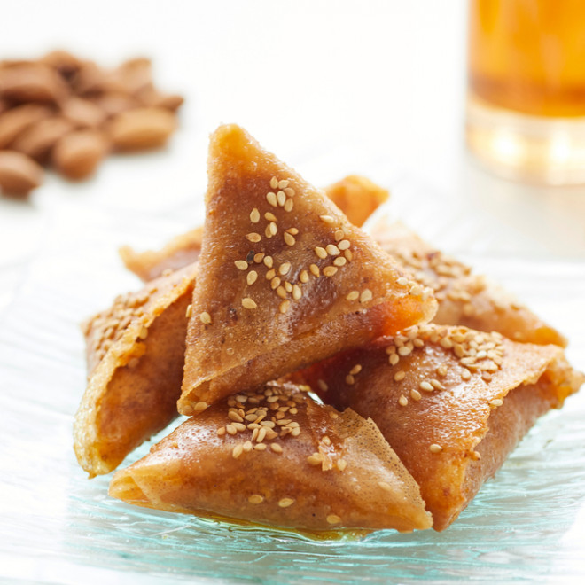

Briouate

Briouate
Le briouate (également appelé briwat) est une pâtisserie magrébine en forme de triangle aux amandes, originaire d'Afrique du Nord. Il est préparé à base d'amandes grillées, sucre, eau de fleur d'oranger et cannelle. Le tout est alors enveloppé dans une feuille de brik en forme de triangle et enrobé de miel donnant ainsi son nom au gâteau.
Origine : Ce triangle aux amandes est originaire d'Afrique du Nord. Il est généralement réalisé pendant le mois du ramadan et diverses occasions, comme la Eid, par exemple. Son goût se rapproche de celui des baklavas, une autre pâtisserie orientale très célèbre et donc populaire.
Ingredients
- 200g amandes en poudre
- 200g sucre en poudre
- 1/2 c.à.c de cannelle
- 3 c.à.c d'eau de fleur d'oranger
- 250g miel
- huile
- 1 oeuf
- 15 feuilles de brick
Steps
- Mélanger le sucre, la cannelle, l'oeuf, puis la poudre d'amandes.
- Faire chauffer 2 cuillères à soupe d'huile de friture et y verser la préparation.
- Ajouter l'eau de fleur d'oranger en remuant et retirer du feu; laisser refroidir.
- Préparer les feuilles de brick : couper les feuilles en deux, puis pour chaque moitié, rabattre la partie arrondie pour former une bande.
- Farcir avec la pâte d'amandes, puis plier cette bande en biais afin d'obtenir un triangle.
- Faire frire les triangles dans l'huile; lorsqu'ils sont bien dorés, les égoutter, puis les tremper dans le miel chaud quelques minutes.
- Laisser refroidir.